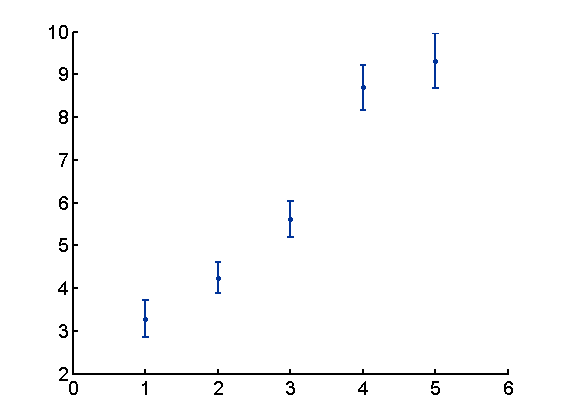
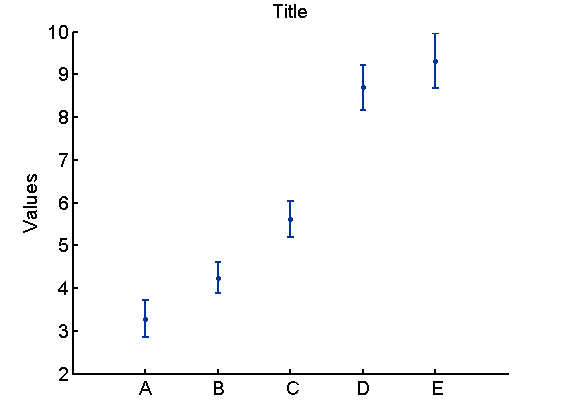
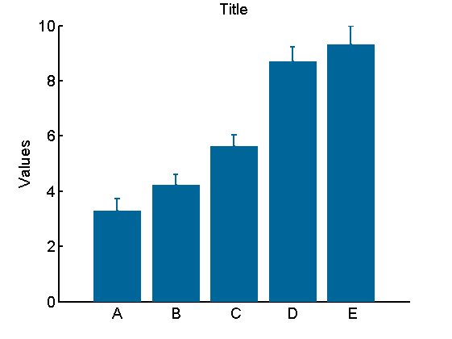
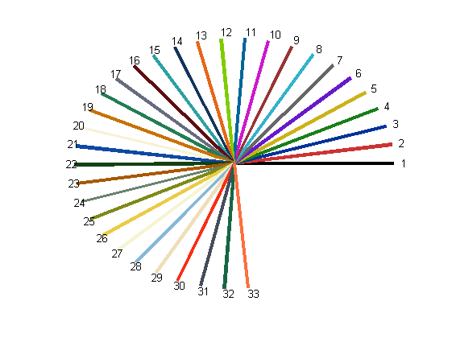
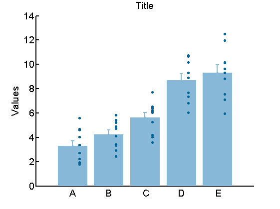

Example: how to use [myplot_bar]
This is an DEMO for my function [myplot_bar].
Wei-Ting Lin 2015/9/22
Demo depends on [mycolor]
This file is formatted to be published.
Contents
Create mock data
temp=rand(10,5); MockData = temp.*repmat([5 5 5 8 8],10,1)+repmat([1:5],10,1);
Use default settings
Syntax
myplot_bar (data)
[data]: n x p matrix, each column is a variable, with (at most) n points/replicates. variables with less than n datapoint represented by NaN
myplot_bar(MockData);
Add text to the plot
Syntax
myplot_bar(data, Styles, Texts)
Since [Styles] is the second input, we need a place holder
Note: Not all items in the structure need to be specified.
myStyle = []; % place holder for [Styles] mytexts = []; MockLabels={'A','B',' C','D', ' E'}; mytexts.xlabels= MockLabels;% use struct(field, value) for the first element mytexts.xlabel = 'Examples'; mytexts.ylabel = 'Values'; mytexts.title = 'Title'; %%%%%%%%%%%%%%%%%%%%%%% myplot_bar(MockData, myStyle,mytexts); %%%%%%%%%%%%%%%%%%%%%%%
Change the styles
[Styles]: a structure, with fields * barcolor: vector of 3, code for color of the bars; * ebcolor: vector of 3, color of the error bars; default is equal to .barcolor * pointcolor: vector of 3, color of the datapoints; default is equal to .barcolor * ErrorOn: 0 or 1; whether to plot bar, default is 1 * BarOn: 0 or 1; whether to plot bar, default is 0 (mean value shown as a point) * DataPointsOn: whether to plot data points, default is 0
myStyle = struct([]); myStyle = struct('barcolor', mycolor(11));% use struct(field, value) for the first element myStyle.BarOn = 1; figure %%%%%%%%%%%%%%%%%%%%%%% myplot_bar(MockData, myStyle,mytexts); %%%%%%%%%%%%%%%%%%%%%%%
About [mycolor]
[mycolor] is a function to chose some colors from a color plate.
type: mycolor(0) will generate this color plate.
or type: help(mycolor) for documentation
mycolor(0);
Display color plate for you to chose.
More examples
myStyle.DataPointsOn = 1; myStyle.barcolor = mycolor(28); myStyle.pointcolor = mycolor(11); figure %%%%%%%%%%%%%%%%%%%%%%% myplot_bar(MockData, myStyle,mytexts); %%%%%%%%%%%%%%%%%%%%%%%